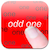

QuickMath
QuickMathAn app to record, stream and label sensor data from the iPhone. It’s geared towards developers and researchers.
The app is written by Benjamin Thiel and started as a software project under my supervision building on previous tools we coded at the Embedded Systems Lab in Passau (yet, so far I did not contribute a single line of code to this new version ;)
Here are some old, rather trivial apps I coded that are still available on the App Store.
Click on the link next to the icon to get some more infos.
Blanks and More Blanks |  Odd One Out | QuickMath